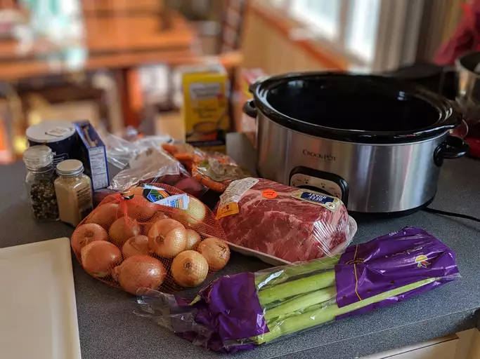

Slow Cooker Post Roast

A top tier fall dish for the family.
This dish....is probably one of the best dishes to eat during the fall for
me.
You can pair it with rice or potatoes or vegetables.
The whole family is going to love eating this meal.
Ingredients
-
Chuck roast: A four-pound chuck roast should make about eight servings.
-
Seasonings: This slow cooker pot roast recipe is simply seasoned with
salt and pepper.
-
Olive oil: Use olive oil to sear the chuck roast to brown on each side.
- Soup mix: A package of dry onion soup mix adds tons of flavor.
-
Water: A cup of water keeps the slow cooker pot roast from drying out.
-
Vegetables: Carrots, potatoes, onions, and celery add substance and make
it a meal.
Steps
- Season and sear the chuck roast.
- Place the ingredients in the slow cooker.
- Cook on Low for 8 to 10 hours.